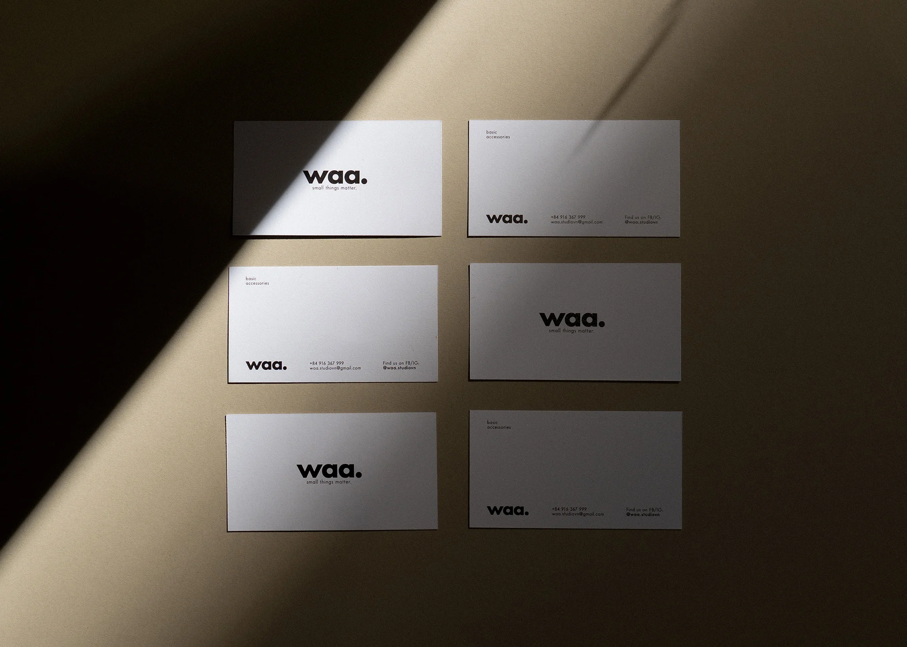

INFORMATION
CARING & WARRANTY
FAQ
TERMS & CONDITIONS
PRIVACY
ABOUT
CONTACT US
READ OUR JOURNAL
LOCATION
ABOUT US
Waa. studios is an accessories brand based in Ho Chi Minh City founded by three partners in January 2021.
We strive to accompany you in different aspects of life with gender-neutral accessories from basic to statement pieces. Every waa. piece is thoughtfully made to consistently embody understated lifestyle and embrace quiet confidence. We adores the genuine beauty of a person who is comfortable in her/his own skin. Along our journey, we aim to propose that ideal beauty and inspire a mindful way of dressing, behaving and living.
MADE TOGETHER
Our pieces are made in Vietnam, where we work closely with a small circle of artisans and workshops who have been with us since the very beginning. Production, for us, is not just a step in the process; it’s a relationship. One built over time through shared values, mutual respect, and a deep appreciation for the hands behind the work.
The artisans we work with come from traditional backgrounds, with skilled hands and years of experience, but they’ve never stopped being open to trying something new. As a young brand full of ideas, working with them has been a creative exchange. We’ve learned so much from their craft, and in return, we bring a fresh perspective that adds new energy to their work.
Each product is carefully considered, crafted to fit naturally into everyday life and be something that can be relied upon over time. It’s not just about making products; it’s about growing together, challenging each other, and finding new ways to build on what we both know.